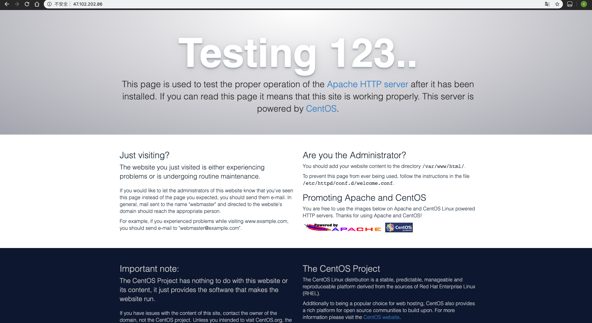
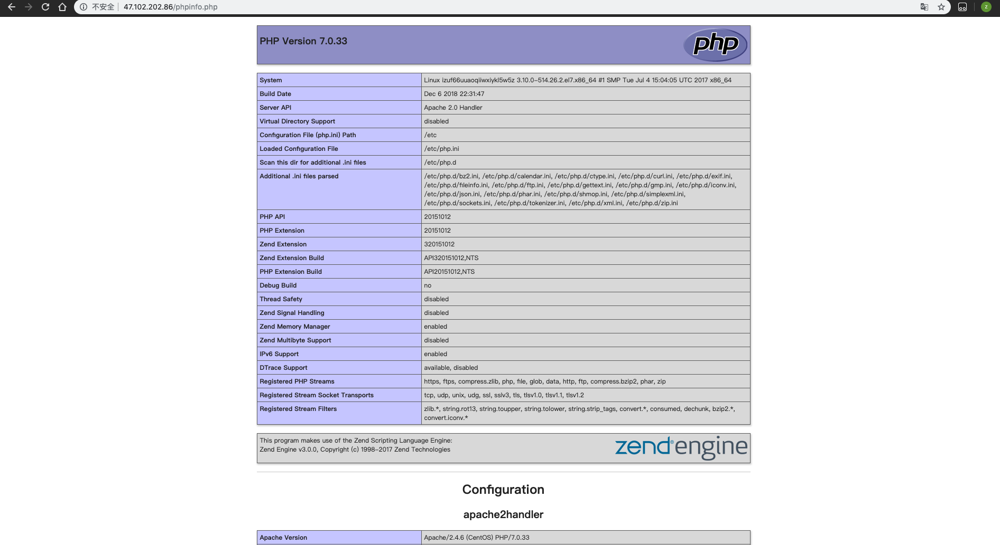
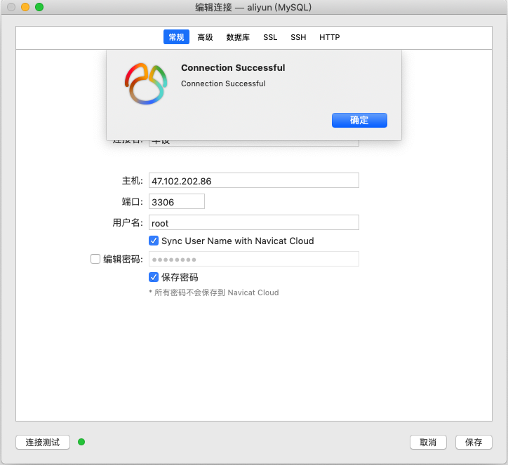

第4章 开发准备与开发前设计
4.1 搭建服务器环境
4.1.1 使用ssh登录服务器
购买了云主机后会得到一个公网ip，在系统终端下使用如下命令登录服务器。
$ ssh root@47.102.202.86
登录成功后会在终端显示如下提示信息。
$ ssh root@47.102.202.86
root@47.102.202.86's password:
Last login: Wed May 22 15:04:07 2019 from 123.185.65.251
Welcome!
这说明当前终端已经是服务器的终端了。接下来我们要安装PHP、MySQL、Apache。
在CentOS系统下，默认的包管理工具是yum，我们本次设计的全部软件包都可以使用yum来下载安装。
4.1.2 安装Apache服务器程序
使用如下命令来安装Apache服务器程序。
$ yum install httpd
安装成功后，控制台会返回如下信息。
$ yum install httpd
已加载插件：fastestmirror
Loading mirror speeds from cached hostfile
* webtatic: uk.repo.webtatic.com
正在解决依赖关系
--> 正在检查事务
---> 软件包 httpd.x86_64.0.2.4.6-89.el7.centos 将被 安装
--> 解决依赖关系完成
依赖关系解决
=============================================================================================================================================================
Package 架构 版本 源 大小
=============================================================================================================================================================
正在安装:
httpd x86_64 2.4.6-89.el7.centos updates 2.7 M
事务概要
=============================================================================================================================================================
安装 1 软件包
总下载量：2.7 M
安装大小：9.4 M
Is this ok [y/d/N]: y
Downloading packages:
httpd-2.4.6-89.el7.centos.x86_64.rpm | 2.7 MB 00:00:00
Running transaction check
Running transaction test
Transaction test succeeded
Running transaction
正在安装 : httpd-2.4.6-89.el7.centos.x86_64 1/1
验证中 : httpd-2.4.6-89.el7.centos.x86_64 1/1
已安装:
httpd.x86_64 0:2.4.6-89.el7.centos
完毕！
安装成功后，使用如下命令启动Apache服务器。
$ service httpd start
控制台返回信息
Redirecting to /bin/systemctl start httpd.service
经过很短的卡顿后，Apache服务器程序启动成功。使用浏览器直接访问服务器的ip地址，可以看到Apache的默认欢迎页。

至此，Apache安装成功。
4.1.3 安装PHP运行环境
使用如下命令来安装php运行环境。
$ yum install php70w
php70w是php 7.0软件包的名字，如果yum能找到这个软件包，就会为我们自动安装。如果系统中缺少相关依赖项，yum也会为我们自动找到并且安装。安装过程中会产生如下提示信息，我们可以从中看到一些依赖被自动安装了。
$ yum install php70w
已加载插件：fastestmirror
Loading mirror speeds from cached hostfile
* webtatic: us-east.repo.webtatic.com
正在解决依赖关系
--> 正在检查事务
---> 软件包 php70w.x86_64.0.7.0.33-1.w7 将被 安装
--> 正在处理依赖关系 php70w-common(x86-64) = 7.0.33-1.w7，它被软件包 php70w-7.0.33-1.w7.x86_64 需要
--> 正在处理依赖关系 php70w-cli(x86-64) = 7.0.33-1.w7，它被软件包 php70w-7.0.33-1.w7.x86_64 需要
--> 正在处理依赖关系 php70w-cli = 7.0.33-1.w7，它被软件包 php70w-7.0.33-1.w7.x86_64 需要
--> 正在检查事务
---> 软件包 php70w-cli.x86_64.0.7.0.33-1.w7 将被 安装
---> 软件包 php70w-common.x86_64.0.7.0.33-1.w7 将被 安装
--> 解决依赖关系完成
依赖关系解决
=============================================================================================================================================================
Package 架构 版本 源 大小
=============================================================================================================================================================
正在安装:
php70w x86_64 7.0.33-1.w7 webtatic 2.8 M
为依赖而安装:
php70w-cli x86_64 7.0.33-1.w7 webtatic 2.9 M
php70w-common x86_64 7.0.33-1.w7 webtatic 1.2 M
事务概要
=============================================================================================================================================================
安装 1 软件包 (+2 依赖软件包)
总下载量：6.9 M
安装大小：26 M
Is this ok [y/d/N]: y
Downloading packages:
(1/3): php70w-common-7.0.33-1.w7.x86_64.rpm | 1.2 MB 00:00:03
(2/3): php70w-7.0.33-1.w7.x86_64.rpm | 2.8 MB 00:00:03
(3/3): php70w-cli-7.0.33-1.w7.x86_64.rpm | 2.9 MB 00:02:33
-------------------------------------------------------------------------------------------------------------------------------------------------------------
总计 46 kB/s | 6.9 MB 00:02:33
Running transaction check
Running transaction test
Transaction test succeeded
Running transaction
正在安装 : php70w-common-7.0.33-1.w7.x86_64 1/3
正在安装 : php70w-cli-7.0.33-1.w7.x86_64 2/3
正在安装 : php70w-7.0.33-1.w7.x86_64 3/3
验证中 : php70w-cli-7.0.33-1.w7.x86_64 1/3
验证中 : php70w-common-7.0.33-1.w7.x86_64 2/3
验证中 : php70w-7.0.33-1.w7.x86_64 3/3
已安装:
php70w.x86_64 0:7.0.33-1.w7
作为依赖被安装:
php70w-cli.x86_64 0:7.0.33-1.w7 php70w-common.x86_64 0:7.0.33-1.w7
完毕！
为了测试PHP是否安装成功，我们可以在控制台输入如下命令
$ php -v
来查看PHP的版本号。控制台返回信息是
$ php -v
PHP 7.0.33 (cli) (built: Dec 6 2018 22:30:44) ( NTS )
Copyright (c) 1997-2017 The PHP Group
Zend Engine v3.0.0, Copyright (c) 1998-2017 Zend Technologies
，说明PHP已经安装成功了。接下来我们前往Apache的网页目录，创建第一个PHP程序，查看一下PHP的信息。
$ cd /var/www/html/
$ vim phpinfo.php
在vim界面下按i进入插入模式，输入如下代码。
<?php
echo phpinfo();
按Esc，按:wq保存并退出。在浏览器中访问http://47.102.202.86/phpinfo.php，可以看到PHP输出phpinfo的信息。

至此，php安装成功。
4.1.4 安装MySQL数据库程序
使用如下命令安装MySQL数据库。
$ sudo yum install mysql-server
要安装mysql-server，需要依赖mysql-community-client，在这次安装中会被同时安装。
控制台返回
$ sudo yum install mysql-server
已加载插件：fastestmirror
Loading mirror speeds from cached hostfile
* webtatic: uk.repo.webtatic.com
正在解决依赖关系
--> 正在检查事务
---> 软件包 mysql-community-server.x86_64.0.5.7.26-1.el7 将被 安装
--> 正在处理依赖关系 mysql-community-client(x86-64) >= 5.7.9，它被软件包 mysql-community-server-5.7.26-1.el7.x86_64 需要
--> 正在检查事务
---> 软件包 mysql-community-client.x86_64.0.5.7.26-1.el7 将被 安装
--> 解决依赖关系完成
依赖关系解决
=============================================================================================================================================================
Package 架构 版本 源 大小
=============================================================================================================================================================
正在安装:
mysql-community-server x86_64 5.7.26-1.el7 mysql57-community 166 M
为依赖而安装:
mysql-community-client x86_64 5.7.26-1.el7 mysql57-community 24 M
事务概要
=============================================================================================================================================================
安装 1 软件包 (+1 依赖软件包)
总下载量：190 M
安装大小：853 M
Is this ok [y/d/N]: y
Downloading packages:
(1/2): mysql-community-client-5.7.26-1.el7.x86_64.rpm | 24 MB 00:00:03
(2/2): mysql-community-server-5.7.26-1.el7.x86_64.rpm | 166 MB 00:00:29
-------------------------------------------------------------------------------------------------------------------------------------------------------------
总计 6.4 MB/s | 190 MB 00:00:29
Running transaction check
Running transaction test
Transaction test succeeded
Running transaction
正在安装 : mysql-community-client-5.7.26-1.el7.x86_64 1/2
正在安装 : mysql-community-server-5.7.26-1.el7.x86_64 2/2
验证中 : mysql-community-server-5.7.26-1.el7.x86_64 1/2
验证中 : mysql-community-client-5.7.26-1.el7.x86_64 2/2
已安装:
mysql-community-server.x86_64 0:5.7.26-1.el7
作为依赖被安装:
mysql-community-client.x86_64 0:5.7.26-1.el7
完毕！
，MySQL已经安装成功。接下来要对MySQL进行一定的配置。
刚安装好的MySQL是不允许直接登录的，如果尝试登录，会提示
$ mysql -u root
ERROR 2002 (HY000): Can't connect to local MySQL server through socket '/var/lib/mysql/mysql.sock' (2)
这样的错误信息。查阅了相关资料后，我们得知，第一次登录MySQL需要先配置MySQL跳过鉴权，然后配置好密码再取消跳过鉴权。
先找到MySQL的配置文件，使用vim编辑。
$ vim /etc/my.cnf
在mysqld节点下加入代码
skip-grant-tables
保存并退出，之后重启MySQL
$ service mysqld restart
Redirecting to /bin/systemctl restart mysqld.service
然后使用命令
$ mysql
就可以直接进入到MySQL命令行下了。
$ mysql
Welcome to the MySQL monitor. Commands end with ; or \g.
Your MySQL connection id is 2
Server version: 5.7.26 MySQL Community Server (GPL)
Copyright (c) 2000, 2019, Oracle and/or its affiliates. All rights reserved.
Oracle is a registered trademark of Oracle Corporation and/or its
affiliates. Other names may be trademarks of their respective
owners.
Type 'help;' or '\h' for help. Type '\c' to clear the current input statement.
mysql>
在MySQL命令行下执行如下命令，来修改默认的密码。
mysql> use mysql
mysql> update user set authentication_string=password('12312312344456') where user='root';
Query OK, 2 rows affected, 1 warning (0.00 sec)
Rows matched: 2 Changed: 2 Warnings: 1
mysql> FLUSH PRIVILEGES;
Query OK, 0 rows affected (0.00 sec)
mysql> exit
Bye
退出MySQL命令行之后，使用vim编辑/etc/my.cnf，在skip-grant-tables左边打一个#号，表示注释。在控制台重启MySQL程序。
service mysqld restart
重启成功后，使用命令连接MySQL数据库。
mysql -u root -p
Enter password:
Welcome to the MySQL monitor. Commands end with ; or \g.
Your MySQL connection id is 8
Server version: 5.7.26 MySQL Community Server (GPL)
Copyright (c) 2000, 2019, Oracle and/or its affiliates. All rights reserved.
Oracle is a registered trademark of Oracle Corporation and/or its
affiliates. Other names may be trademarks of their respective
owners.
Type 'help;' or '\h' for help. Type '\c' to clear the current input statement.
mysql>
MySQL数据库在控制台上连接成功。我们尝试一下使用Navicat进行远程连接。

远程连接成功。
至此，我们已经设置好了服务器的基础配置，接下来可以开始准备开发了。